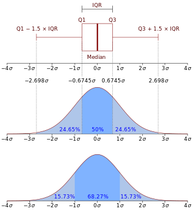
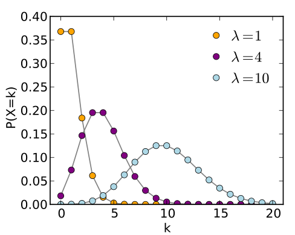

Data Analysis Foundation
Descriptive Statistics and Probability Bacis Theory
Ma Ming
Big Data Platform Architect and Data Scientist.
Course Introduction
- 概率论基础知识
- 随机事件&随机变量
- 独立事件&相关事件
- 联合概率和条件概率
- 加法法则和乘法法则
- 全概率定理和贝叶斯公式
- 总体和样本(Population and Sample)
- 描述性统计(Descriptive Statistics)
- 可视化(Visualization)
- 概率分布(Probability distribution)
- Normal Distribution
- Binomial Distribution
- Possion Distribution
- 最大似然估计(MLE)
Prelimitary
- Data Basics
- Observations,Variables and data matrics or data frame
- Type of Variables
- Observations,Variables and data matrics or data frame
- Random Variables
- Relationships between Variables
- PMF,PDF,CDF,SF
mtcars dataset
| mpg | cyl | disp | hp | drat | wt | qsec | vs | am | gear | carb | |
|---|---|---|---|---|---|---|---|---|---|---|---|
| Mazda RX4 | 21.0 | 6 | 160 | 110 | 3.90 | 2.620 | 16.46 | 0 | 1 | 4 | 4 |
| Mazda RX4 Wag | 21.0 | 6 | 160 | 110 | 3.90 | 2.875 | 17.02 | 0 | 1 | 4 | 4 |
| Datsun 710 | 22.8 | 4 | 108 | 93 | 3.85 | 2.320 | 18.61 | 1 | 1 | 4 | 1 |
| Hornet 4 Drive | 21.4 | 6 | 258 | 110 | 3.08 | 3.215 | 19.44 | 1 | 0 | 3 | 1 |
| Hornet Sportabout | 18.7 | 8 | 360 | 175 | 3.15 | 3.440 | 17.02 | 0 | 0 | 3 | 2 |
Type of Variables
- Numerical (Quantitative)
- Continous
- Discrete
- Continous
- Categorical (Qualitative)
- Nominal
- Ordinal
- Nominal
Airquality Dataset
| Ozone | Solar.R | Wind | Temp | Month | Day |
|---|---|---|---|---|---|
| 41 | 190 | 7.4 | 67 | 5 | 1 |
| 36 | 118 | 8.0 | 72 | 5 | 2 |
| 12 | 149 | 12.6 | 74 | 5 | 3 |
| 18 | 313 | 11.5 | 62 | 5 | 4 |
| NA | NA | 14.3 | 56 | 5 | 5 |
| 28 | NA | 14.9 | 66 | 5 | 6 |
概率基础
- 随机事件是在随机试验中,可能出现也可能不出现,而在大量重复试验中具有某种规律性的事件叫做随机事件(简称事件)。
- 随机事件所有可能的结果的集合称为样本空间。
- 随机事件A或者B发生的概率: \[P(A \cup B) = P(A)+P(B)-P(A \cap B)\]
- 随机事件A和B同时发生的概率，即联合概率，记为$P(A,B)$或\(P(AB)\)
- 给定随机事件B已发生的情况下，随机事件A发生的概率，为A以B为条件的概率，记为\(P(A|B)\). \[P(A|B)=\frac{P(AB)}{P(B)}\]
- 全概率公式 \[P(A)=\sum_b P(AB)=\sum_b P(A|B=b)P(B=b)\]
贝叶斯公式
\[P(A|D)=\frac{P(D|A)P(A)}{P(D)}\]
其中，
$P(A|D)$称为事件A的后验概率.
$P(A)$称为先验概率。
$P(D|A)$称为似然性。
- 随机事件A,B相互独立，则满足
\[P(AB)=P(A)P(B)\]
例题1.
- 根据以往的临床记录，某种癌症诊断事件的效果如下：如果病人患有癌症，则实验诊断为阳性的概率为95%。现在对自然人均进行筛查，已知自然人群中患癌症的概率为0.005, 问：该诊断试验结果为阳性的话，接受试验的人患有癌症的概率。
- 解：设试验结果为阳性的概率为P(A),被诊断者患有癌症的概率为P(C)
已知\(P(A|C) = 0.95，P(A|\bar{C})=0.05,P(C)=0.005,P(\bar{C})=0.995\)
\[P(C|A) =\frac{P(A|C)P(C)}{P(A|C)P(C)+P(A|\bar{C})P(\bar{C})}=0.087\]
例题2.
- 标签问题
将15名新生平均分配到三个班级共有多少种分配方案? - \[\binom{15}{5}\binom{10}{5}\binom{5}{5}=\frac{15!}{5!5!5!}\]
Random variables （随机变量）
- 一个 random variable 是一个实验或观察结果的数字形式输出.
- Random Variable有两种形式,
discrete or continuous. - 离散型random variable ： 有限的可能性.
\(P(X = k)\) - 连续型random variable接受一个实数范围.
\(P(X \in A)\)
可以被考虑为是随机变量的例子
- 扔硬币的输出数字化\((0-1)\)
- 扔骰子的输出
- 某天某网站的访问量
- 点击广告的人数
- Question? : How to describe the distribution of a random variable?
Example 1 : Titanic dataset
| X | Name | PClass | Age | Sex | Survived | SexCode |
|---|---|---|---|---|---|---|
| 1 | Allen, Miss Elisabeth Walton | 1st | 29.00 | female | 1 | 1 |
| 2 | Allison, Miss Helen Loraine | 1st | 2.00 | female | 0 | 1 |
| 3 | Allison, Mr Hudson Joshua Creighton | 1st | 30.00 | male | 0 | 0 |
| 4 | Allison, Mrs Hudson JC (Bessie Waldo Daniels) | 1st | 25.00 | female | 0 | 1 |
| 5 | Allison, Master Hudson Trevor | 1st | 0.92 | male | 1 | 0 |
| 6 | Anderson, Mr Harry | 1st | 47.00 | male | 1 | 0 |
Example 2 : iris dataset
| Sepal.Length | Sepal.Width | Petal.Length | Petal.Width | Species |
|---|---|---|---|---|
| 5.1 | 3.5 | 1.4 | 0.2 | setosa |
| 4.9 | 3.0 | 1.4 | 0.2 | setosa |
| 4.7 | 3.2 | 1.3 | 0.2 | setosa |
| 4.6 | 3.1 | 1.5 | 0.2 | setosa |
| 5.0 | 3.6 | 1.4 | 0.2 | setosa |
| 5.4 | 3.9 | 1.7 | 0.4 | setosa |
Example 3 : mtcars dataset
| mpg | cyl | disp | hp | drat | wt | qsec | vs | am | gear | carb | |
|---|---|---|---|---|---|---|---|---|---|---|---|
| Mazda RX4 | 21.0 | 6 | 160 | 110 | 3.90 | 2.620 | 16.46 | 0 | 1 | 4 | 4 |
| Mazda RX4 Wag | 21.0 | 6 | 160 | 110 | 3.90 | 2.875 | 17.02 | 0 | 1 | 4 | 4 |
| Datsun 710 | 22.8 | 4 | 108 | 93 | 3.85 | 2.320 | 18.61 | 1 | 1 | 4 | 1 |
| Hornet 4 Drive | 21.4 | 6 | 258 | 110 | 3.08 | 3.215 | 19.44 | 1 | 0 | 3 | 1 |
| Hornet Sportabout | 18.7 | 8 | 360 | 175 | 3.15 | 3.440 | 17.02 | 0 | 0 | 3 | 2 |
| Valiant | 18.1 | 6 | 225 | 105 | 2.76 | 3.460 | 20.22 | 1 | 0 | 3 | 1 |
Relation between variables
- Correlation
- Explanatory Variable and Response Variable
- Positive and Negative
- Strong and Weak
- Explanatory Variable and Response Variable
Example

- Correlation DONOT imply Causation!!!
Example again
某调查机构调查2379个9~19岁女生显示大部分吃早餐的女生都比较苗条，如果我们由此得出结论： 吃早餐可以使女士苗条。
你认为正确吗？Correlation DONOT imply Causation!!!
PMF (Probability Mass Function)
概率质量函数的值是随机变量取该值的概率:\(p\)
- \(p(x) \geq 0\) for all \(x\)
- \(\sum_{x} p(x) = 1\)
Example for PMF
令 \(X\) 代表抛硬币的结果，这里 \(X=0\) 代表反面而 \(X = 1\) 代表正面。
\[
p(x) = (1/2)^{x} (1/2)^{1-x} ~~\mbox{ for }~~x = 0,1
\]
假如我们不知道硬币是否均匀; \(\theta\) 表示正面出现的概率(在 0 和 1 之间).
\[
p(x) = \theta^{x} (1 - \theta)^{1-x} ~~\mbox{ for }~~x = 0,1
\]
PDF (Probability Density Function)
概率密度函数描述连续型随机变量的概率特征。
pdf下的面积代表了该随机变量在相应范围出现的概率
pdf = \(f\) 必须满足
\(f(x) \geq 0\) for all \(x\)
The area under \(f(x)\) is one.
Example of PDF
思考从求助热线打入的求救电话，其中得到解决的比例
\[
f(x) = \left\{\begin{array}{ll}
2 x & \mbox{ for } 1 > x > 0 \\
0 & \mbox{ otherwise}
\end{array} \right.
\]
这是一个有效的概率密度函数吗？
CDF and Survival function
- 一个随机变量的累积分布函数cumulative distribution function (CDF) \(X\) 定义为
\[ F(x) = P(X \leq x) \] - 适用于连续型和离散型随机变量
- 留存函数survival function 定义为 \[ S(x) = P(X > x) \]
- 注意 \(S(x) = 1 - F(x)\)
- 对连续型随机变量来说，PDF 是 CDF 的导数
Example
回想前面热线电话的例子，其CDF和SF:
For \(1 \geq x \geq 0\) \[ F(x) = P(X \leq x) = \frac{1}{2} Base \times Height = \frac{1}{2} (x) \times (2 x) = x^2 \]
\[ S(x) = 1 - x^2 \]
Sampling & Sources of bias
- Population vs Sample
- Sources of Bias
- Convenience Sample
- No Response
- Voluntary Respone
- Convenience Sample
- Sampling methods
- Simple random sampling (SRS)
- Stratified sample
- Cluster sample
- Multistage sample
- Simple random sampling (SRS)
Simple Random Sampling
Stratified Sampling
Cluster Sampling
Multistage Sampling

Descriptive Statistics
- Shape
- Center
- Mean
- Median
- Mode
- Mean
- Spread
- Range
- Variance
- IQR (Inter Quarter Range)
- Fivenum : \(( Min,Q_1,Median,Q_3,Max)\)
- Visualization
Measure of Shape
Measure of Center
Measure of Spread
- Range : ( Max - Min )
- Variance : \(S^2 = \frac{\sum_{i=1} (X_i - \bar X)^2}{n-1}\)
- Standart Deviation : \(\sqrt{Var(x)}\)
- IQR ( Inter Quartile Range) : \(Q_3-Q_1\)
- Robust Statistics : Median，IQR
The population mean(总体均值)
- 随机变量期望值 (expected value) 或者 均值 被认为是随机变量的分布的中心点
- 对于离散型随机变量 \(X\) ，其 PMF 为 \(p(x)\) 均值定义为
\[ E[X] = \sum_x xp(x). \] 这里的和是包括所有可能的 \(x\) - 对于连续型随机变量 \(X\), 其 PDF 为 \(f(x)\) 均值定义为
\[ E[X] = \int_{-\infty}^{\infty}xf(x)dx \]
The sample mean(样本均值)
- 样本均值用来估算总体均值
- 经验均值 (empirical mean) \[ \bar X = \sum_{i=1}^n x_i p(x_i) \] where \(p(x_i) = 1/n\)
The population variance(总体方差)
- 方差描述了一个随机变量的 spread(散布程度)
- \(X\) 是一个随机变量， 均值为 \(\mu\), 其方差定义为：
\[ Var(X) = E[(X - \mu)^2] = E[X^2] - E[X]^2 \] 标准差(The standart deviation)： \(\sigma=\sqrt{Var}\)
- 到均值的期望距离
- 高方差意味着较大的散步程度或强波动性。
- 方差的平方根称为标准差 standard deviation
- 标准差与 \(X\) 有同样的单位
- Question: 为什么我们要对到均值距离平方来计算方差?
样本方差(The sample variance)
- The sample variance is \[ S^2 = \frac{\sum_{i=1} (X_i - \bar X)^2}{n-1} \]
- 也是一个随机变量
- 其平方根是样本标准差( sample standard deviation )
Histogram (直方图)
直方图是对数值型数据分布的一种图形化表示。
| a | b | c |
|---|---|---|
| -0.8144389 | 20.15591 | -18.74085 |
| 2.0293409 | 20.46536 | -23.47586 |
| -17.0712437 | 25.57696 | -20.05391 |
| 7.1894407 | 20.29878 | -20.90740 |
| -4.0322328 | 16.42866 | -22.47748 |
| -10.8482131 | 19.77109 | -21.36590 |
| 22.1244600 | 20.00176 | -22.03549 |
| -15.3665127 | 19.42893 | -19.86470 |
| -5.4004777 | 24.76773 | -19.85656 |
| 13.6166368 | 21.88623 | -15.77181 |
| 20.7127988 | 19.78566 | -18.56210 |
| -19.8631438 | 21.98955 | -18.24464 |
Parameters of Histogram
- Number of bins : \(k\)
- Or bin width : \(h\)
- How to choose \(k\)
- Square-root choice : \(k=\sqrt{n}\)
- Sturges' formula : \(k=\log_2 n + 1\)
BarPlot (条形图)
- 条形图是用矩形条来展现分组数据，矩形条的长度和分组数据的值是成比例的。
mtcars counting for gear
| Gears# | 3 | 4 | 5 |
|---|---|---|---|
| counts | 15 | 12 | 5 |
Stacked Barplot
| Gears# | 3 | 4 | 5 |
|---|---|---|---|
| vs=0 | 12 | 2 | 4 |
| vs=1 | 3 | 10 | 1 |
DotPlot
- The dot plot as a representation of a distribution consists of group of data points plotted on a simple scale. Dot plots are used for continuous, quantitative, univariate data.
-
(2,2,3,5,13,20,1,4,3,5,7,8,8,8,10,10,8,8,4,10,15,5,12, 12,14,14,16,16,17,19,19,4,6,9,7,12,13,11,11,17,18,18,
18,18,18,18,18,12,12,12,12,12,12,12,12,12,12,12,
12,20,20,20,20,20,20,1,1,1,20)

Bubble Plot
The Crime Dataset
| state | murder | Forcible_rate | Robbery | aggravated_assult | burglary | larceny_theft | motor_vehicle_theft | population |
|---|---|---|---|---|---|---|---|---|
| Alabama | 8.2 | 34.3 | 141.4 | 247.8 | 953.8 | 2650.0 | 288.3 | 4627851 |
| Alaska | 4.8 | 81.1 | 80.9 | 465.1 | 622.5 | 2599.1 | 391.0 | 686293 |
| Arizona | 7.5 | 33.8 | 144.4 | 327.4 | 948.4 | 2965.2 | 924.4 | 6500180 |
| Arkansas | 6.7 | 42.9 | 91.1 | 386.8 | 1084.6 | 2711.2 | 262.1 | 2855390 |
| California | 6.9 | 26.0 | 176.1 | 317.3 | 693.3 | 1916.5 | 712.8 | 36756666 |
| Colorado | 3.7 | 43.4 | 84.6 | 264.7 | 744.8 | 2735.2 | 559.5 | 4861515 |
Rose Plot
## Hadley broke my code
Mosaic Plot
Mosaic plot常常用来展示多个Categorical data(分类数据)
The Bernoulli distribution
- 伯努利分布(Bernoulli distribution) 是一个两值输出。
- 伯努利随机变量只输出1或者0，对应概率为 \(p\) and \(1-p\) 。
- 伯努利随机变量 \(X\) ,其PMF \[P(X = x) = p^x (1 - p)^{1 - x}\]
- 伯努利随机变量均值为 \(p\) ，方差为 \(p(1 - p)\)
- 我们一般把 \(X=1\) 认为是 "success" ，而 \(X=0\) 认为是 "failure"
- 记为 \(X \sim Ber(p)\)
二项式分布(Binomial distribution
- 二项随机变量(binomial random variables) 是由独立不相关(iid)的伯努利变量的和得到的。
- 令 \(X_1,\ldots,X_n\) 为 \(iid\ Bernoulli(p)\); 那么 \(X = \sum_{i=1}^n X_i\) 是二项随机变量。
- The binomial mass function is \[ P(X = x) = \left( \begin{array}{c} n \\ x \end{array} \right) p^x(1 - p)^{n-x} \] 对于 \(x=0,\ldots,n\)
- 记为 \(X\sim Bin(n,p)\)
- \(\mu=p,\sigma^2=p(1-p)\)
- 考虑扔十次硬币，出现正面的次数

正态分布(The normal distribution)
- 一个 正态(normal) 或者 高斯(Gaussian) 分布随机变量均值为 \(\mu\) ,方差为 \(\sigma^2\) ，其 概率密度函数:
\[
f(x)=(2\pi \sigma^2)^{-1/2}e^{-(x - \mu)^2/2\sigma^2}
\]
如果 \(X\) 是符合此密度函数的随机变量，那么 \(E[X] = \mu\) 且 \(Var(X) = \sigma^2\)
- 记为 \(X\sim \mbox{N}(\mu, \sigma^2)\)
- 当 \(\mu = 0\) 且\(\sigma = 1\) ，称为 标准正态分布(the standard normal distribution)
- 标准正态分布经常用 \(Z\) 来表示
- 设 \(X \sim Z\), 若 \(Z_\alpha\) 满足条件 \(P\{X>z_\alpha \} = \alpha\)
则称 \(z_\alpha\) 为标准正态分布上的 \(\alpha\) 分位点
\(z_{0.05} = 1.645,\ z_{0.025} = 1.96,\ z_{0.005}=2.57,\ z_{0.001}=3.10\)
Normal Distribution 特性
在自然现象和社会现象中，大量随机变量都符合正态分布或近似正态分布。

- 
Example for Norm and ScatterPlot

泊松分布(The Poisson distribution)
- 用来对次数进行建模
- Poisson PMF
\[ P(X = x; \lambda) = \frac{\lambda^x e^{-\lambda}}{x!} \] 对于 \(x=0,1,\ldots\) - 均值 \(\lambda\)
- 方差也为 \(\lambda\)
- 注意这里 \(x\) 取值范围是从 \(0\) 到 \(\infty\)
- 记为 \(X\sim \pi(\lambda)\)

Example Poisson distribution
- Modeling count data
- Modeling event-time or survival data
- Modeling contingency tables
- Approximating binomials when \(n\) is large and \(p\) is small
Rates and Poisson random variables
- 泊松随机变量经常对单位时间或面积某事件发生的次数建模
- \(X \sim Poisson(\lambda t)\) ,这里
- \(\lambda = E[X / t]\) 是单位时间内的期望计数。
- \(t\) 是观察时间
- \(\lambda = E[X / t]\) 是单位时间内的期望计数。
当 \(n\) 很大同时 \(p\) 很小时，泊松分布是二项式分布的一个精确近似。
- Notation
- \(X \sim \mbox{Binomial}(n, p)\)
- \(\lambda = n p\)
- \(n\) gets large while \(p\) gets small
泊松分布的例子
- 在一个时间间隔内某电话交换台收到的电话呼叫次数。
- 一本书一页中的印刷错误数。
- 某地区一天内邮递丢失的信件数。
- 某医院一天内的急诊病人数。
- 某城市一个时间间隔内发生交通事故的次数。
Question 1 : 在一公共汽车站出现的人数符合Poission分布，均值为\(2.5\) 每小时.
如果我们观察这个车站4小时, 整个时间内小于等于3个人出现的概率是多少?Question 2 : 设一本书的各页的印刷错误个数X服从泊松分布,已知有一个和两个印刷错误的页数相同,试求随意抽查的4页中无印刷错误的概率.
泊松分布的练习答案
- 解 1 ：公共汽车站平均每小时出现2.5人，也就是说平均4小时出现8人，并符合泊松分布 \(Poisson(\lambda=8)\) ，小于等于3个人的概率
\(P = \frac{\lambda^0*e^{-\lambda}}{0!}+\frac{\lambda^1*e^{-\lambda}}{1!}+\frac{\lambda^2*e^{-\lambda}}{2!}+\frac{\lambda^3*e^{-\lambda}}{3!}\) 将 $\lambda=8$带入即可得到答案。 - 解 2 ： 我们首先需要求出 \(\lambda\)
由题意可知
\(\frac{\lambda^1*e^{-\lambda}}{1!}=\frac{\lambda^2*e^{-\lambda}}{2!}\) 解得 \(\lambda=2\)
说明各页印刷错误次数X服从 \(Poisson(\lambda=2)\) 随机取一页没有错误的概率为 \(\frac{\lambda^0*e^{-\lambda}}{0!}=e^{-2}\)
那么随机抽四页没有错误的概率为 \({(e^{-2})}^{-4}=e^{-8}\)
Option 1 : 峰度 (Kurtosis) 和 偏度 (Skewness)
偏度 是统计数据分布偏斜方向和程度的度量，< 0 称分布具有负偏离，也称左偏态。>0称分布具有正偏离，也称右偏态。 数学上是随机变量标准化后的三阶统计量。 \[ v_1 = E[(\frac{x-E(x)}{\sqrt{Var(x)}})^3] \]
峰度 表征概率密度分布曲线在平均值处峰值高低的特征数。直观看来，峰度反映了峰部的尖度。峰度越大越说明尾部越窄小，反之尾部比较肥大。 数学上是随机变量标准化后的四阶统计量。 \[ V_2 = E[(\frac{x-E(x)}{\sqrt{Var(x)}})^4] \]
Option 2
- 问题1：将$n$只球随机的放入$N(N\geqq n)$个盒子中，试求每个盒子至多有一个球的概率（设盒子的容量不限）。
- \[ p=\frac{N(N-1)(N-2)...(N-n+1)}{N^n} \]
- 求解生日悖论
- 问题2：设有$N$间产品，其中有$D$件次品，从中任取$n$件， 问其中有 \(k(k\leqq D)\) 件次品的概率是多少？
- \[ p=\frac{\binom{D}{K}\binom{N-D}{n-k}}{\binom{N}{n}}\]
- 超几何分布
Option 3
马尔可夫不等式(Markov Inequality)
随机变量$X>0$，任意实数$a>0$，有
\[P(X\geqq a) \leqq \frac{E(x)}{a}\]
证： 设$X$的概率密度函数为\(f(x)\)
\[P(X\geqq a) \leqq \int_{a}^{\infty}\frac{X}{a}f(x)dx \leqq E(X/a)\]
Option 4
切比雪夫不等式(Chebyshev Inequality)
随机变量 \(X\) 的均值为 $\mu$，方差为 \(\sigma^2\) ，有
\[P(|X-\mu|\geqq \epsilon) \leqq \frac{\sigma^2}{\epsilon^2}\]
证：
将$|X-\mu|$带入马尔可夫不等式，可得:
\[
p(|X-\mu|\geqq a) \leqq \frac{E(|X-\mu|)}{a}
\]
\[
P((X-\mu)^2\geqq a^2)\leqq \frac{E((X-\mu)^2)}{a^2}=\frac{\sigma^2}{a^2}
\]
Option 5
霍夫丁不等式(Hoeffding Inequality)
考虑伯努利随机变量 \(X\) ，其正面发生的概率为 \(p\) ，对于 \(\epsilon>0\) ，试验 \(n\) 次，其正面出现的次数记为 \(H(n)\) ，有
\[P((p-\epsilon)n\leqq H(n)\leqq (p+\epsilon)n) \geqq 1-2exp(-2\epsilon^2n)\]
Option 6
最大似然估计(Maximum Likelihood Estimation)
- 若总体 \(X\) 是连续性，其概率密度为 \(f(x;\theta),\theta \in \Theta\) 的形式已知，\(\theta\) 为待估参数，\(\Theta\) 是 $\theta$的可取范围。设 \(X_1,X_2,...,X_n\) 是来自 \(X\) 的样本，则 \(X_1,X_2,...,X_n\) 的联合概率密度为
\[\prod_{i=1}^{n}f(x_i,\theta)\] 又设 \(x_1,x_2,...,x_n\) 是相应于样本 \(X_1,X_2,...,X_n\) 的观测值，样本的似然函数定义为：
\[L(\theta) = L(x_1,x_2,...,x_n;\theta)=\prod_{i=1}^{n}f(x_i,\theta)\] 而使似然函数最大的 \(\theta\) 的估计值
\[\hat{\theta}=argmax_{\theta \in \Theta} L(\theta;x)\] 称为 $\theta$的最大似然估计。
...接上页
- 为了计算方便，实践中我们常采用似然函数的对数形式，并对其求导而得到 \(\hat{\theta}\)
- 例题： 设 \(X\sim B(1,p), X_1,X_2,...X_n\) 是来自 \(X\) 的一个样本值，求参数 \(p\) 的极大似然估计。
解： 设 \(x_1,x_2,...,x_n\) 是相应于样本 \(X_1,X_2,...X_n\) 的样本值，$X$的分布律为
\[P\{X=x\}=p^x(1-p)^{1-x},x=0,1.\] 似然函数为
\[L(p)=\prod_{i=1}^{n}p^{x_i}(1-p)^{1-x_i},\] 而 \(lnL(p)=(\sum_{i=1}^{n}x_i)ln(p)+(n-\sum_{i=1}^{n}x_i)ln(1-p)\)
令\[\frac{dlnL(p)}{dp}=\frac{\sum_{i=1}^{n}x_i}{p}-\frac{n-\sum_{i=1}^{n}x_i}{1-p}=0,\] 解得 \(\hat{p}=\frac{1}{n}\sum_{i=1}^{n}x_i=\bar{x}\)